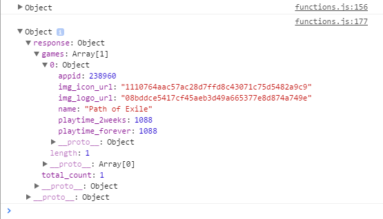

Before I finish up this tutorial, I wanted to run through another example function on how to access a JSON object. In this example, I am using the for...in iterator to loop through an array of returned games to get their names and the Steam user's total playtime over the past 2 weeks.
The JSON Object for my own recently played games (Not much variety here...):
Here is how we could access the data values in this object:
function showContents(response){
for(var p in response.response.games) {
var gameName = response.response.games[p].name;
console.log(gameName);
var play2wks = response.response.games[p].playtime_2weeks;
var playForver = response.response.games[p].playtime_forever;
var newName = document.createElement('p');
var newPlayTime = document.createElement('p');
newName.textContent = gameName;
newPlayTime.textContent = play2wks;
document.getElementById('RecentlyOwned').appendChild(newName);
document.getElementById('RecentlyOwned').appendChild(newPlayTime);
}
}And if you have the local host server running still, you can try it out below with your own or another person's SteamID:
If I enter my own SteamID, I get these results below:(that is not 1088hrs in the past 2 weeks, I think it is 10.88hrs)
Path of Exile 1088
That ends this brief tutorial on using Steam's Web API. Hopefully this tutorial provided you the foundation necessary to use Steam's Web API effectively. There is a lot of information available in the various methods provided in this API, I encourage anyone interested to get a Steam account and API key and play around with the various options out there.